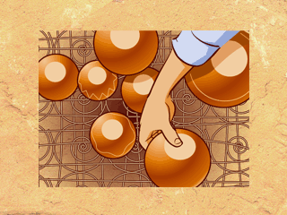

The potter builds an outdoor KILN each time she has new pots ready for FIRING.
She places the pots on a grate and covers them with broken pottery, tin, old bedsprings, or metal pieces to protect them from the fire.

|  |
The potter builds an outdoor KILN each time she has new pots ready for FIRING.She places the pots on a grate and covers them with broken pottery, tin, old bedsprings, or metal pieces to protect them from the fire. |
|